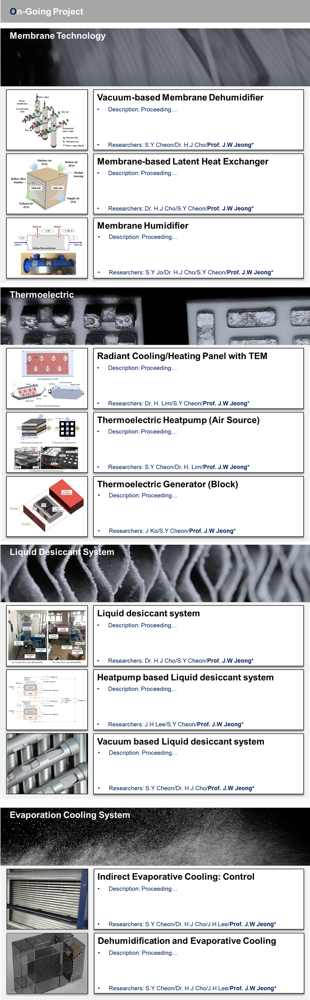

Research Interest
I am interested in predicting the building facilities and environmental engineering-related technologies needed by our descendants in the future and playing a leading role in developing the core technologies.
Keywords: HVAC, Building Energy, Membrane, Dehumidification, Liquid desiccant, Thremoelectric, Power generation, Evaporative cooling
